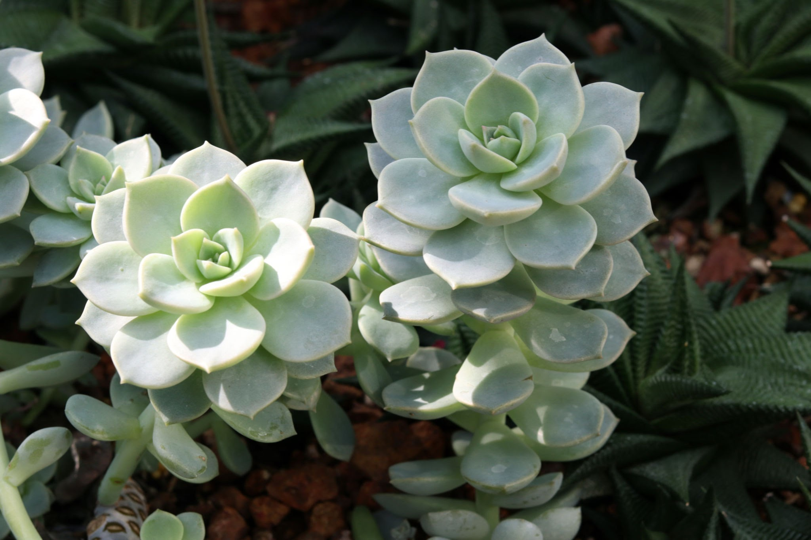

Suculenta Echeveria


La Echeveria es una de las suculentas más buscadas por su hermosa forma de roseta y sus hojas carnosas. Es ideal para principiantes y perfecta para decorar balcones soleados o ventanas muy luminosas.
$6.500
Añadir al carritoEspecificaciones Técnicas
| Tamaño actual: | 10 - 15 cm de diámetro |
| Maceta: | Plástico N° 12 |
| Toxicidad: | Segura para mascotas (no tóxica) 🐾 |
Guía de Cuidados
- ☀️ Luz: Necesita mucha luz natural, idealmente sol directo durante la mañana o el final de la tarde. Si se estira perdiendo la forma de roseta, le falta luz.
- 💧 Riego: Muy escaso. Regar solo cuando la tierra esté completamente seca. Evitar mojar el centro de la roseta para que no se pudra.
- 🌡️ Clima: Prefiere climas cálidos y secos. Debe protegerse de las heladas y el frío extremo en invierno.